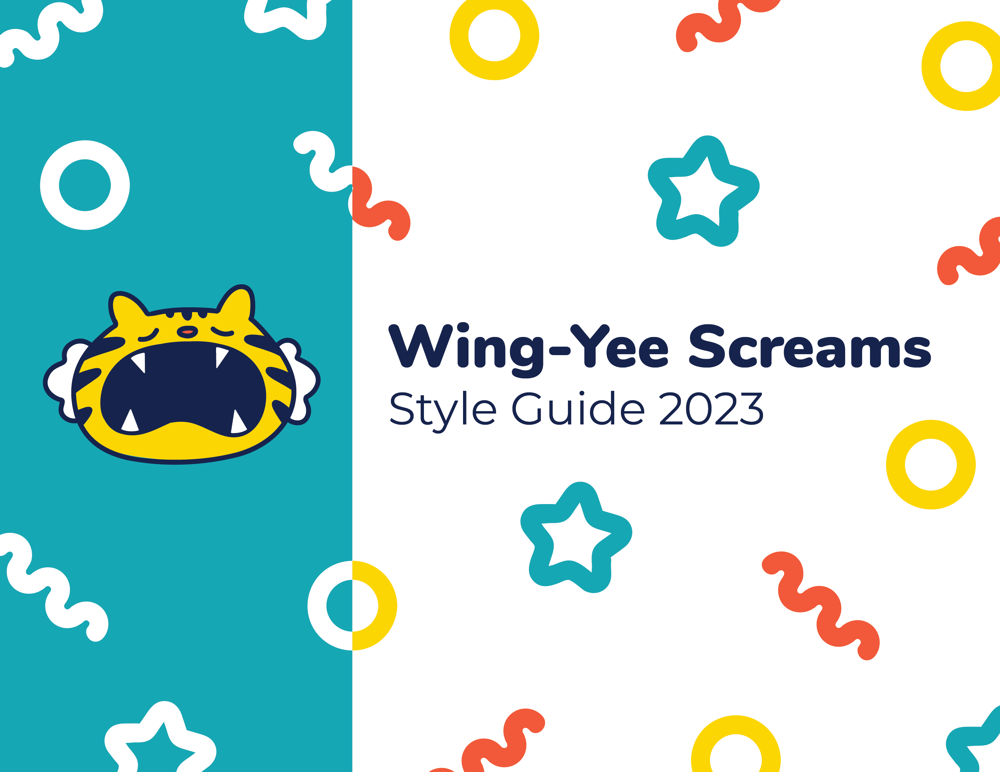
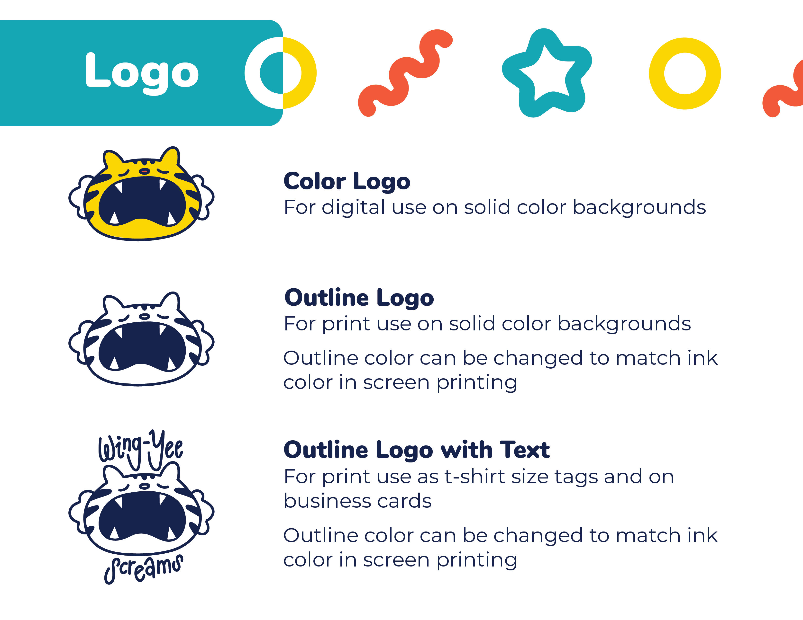
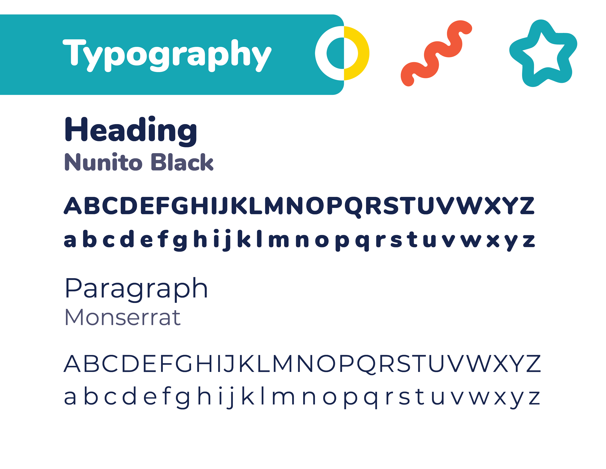
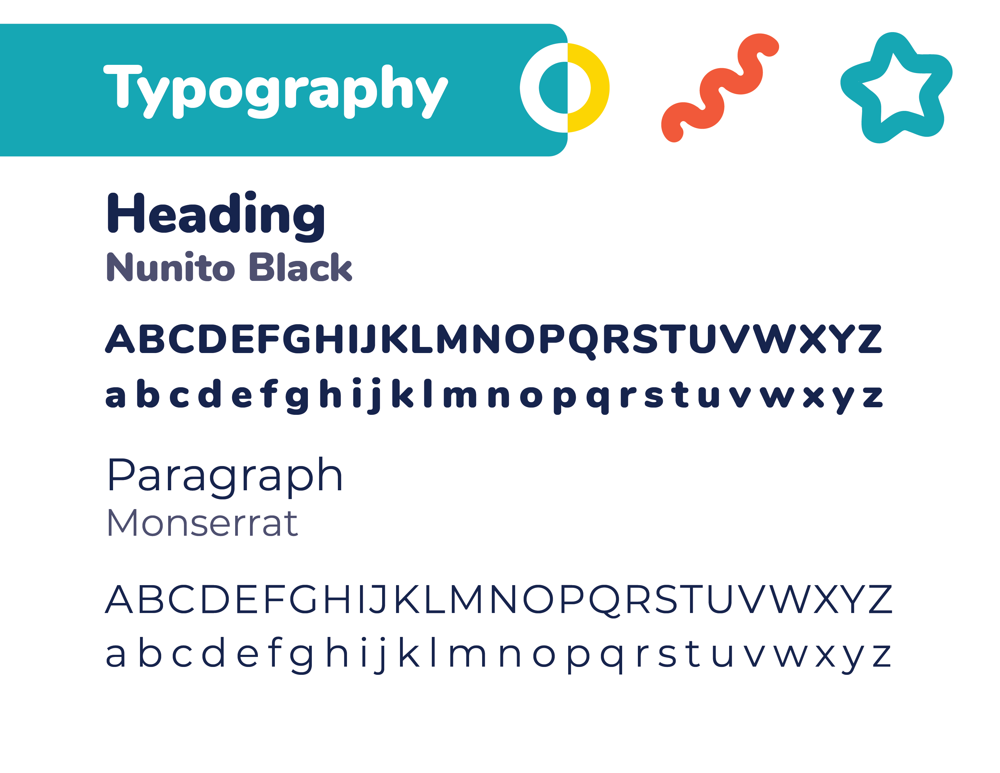

This is the style guide I created for myself for my business, Wing-Yee Screams. I use these guidelines for creating digital and print assets such as price sheets, signage at vending events, shirt tags, and thank you cards for orders. Wing-Yee Screams is represented by bright primary colors and simple shapes to evoke a sense of play. It is accompanied by a hand drawn logo of a tiger to indicate that my products are hand made and to introduce a personal aspect to my branding.
  
